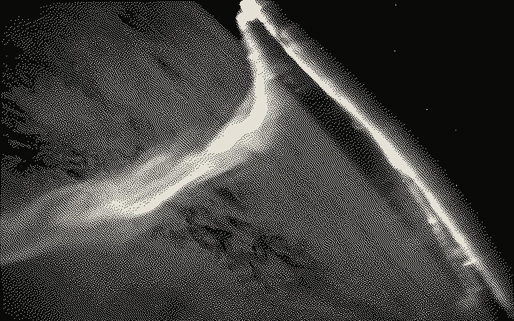

IonWatch
Space Technology · AI/ML · Research
An ionospheric scintillation monitoring system designed to provide insights into space weather disturbances.
- Built on
- Low-cost NavIC/GNSS and Raspberry Pi station
- Result
- IDE Bootcamp 2026 Winner, Best Performing Team and Pitch Excellence Award